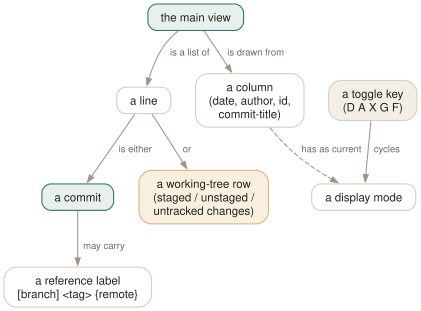

Day 02
The main view
The graph, the refs, and three rows that are not commits.
By the end of today you can
- read a main-view line: date, author, graph, refs, subject — and know which column is which
- recognise the three working-tree rows at the top and know why they are there
- reshape the view on the spot with the display toggles, and find them again in the option menu
One line per commit, and the line has structure
The main view looks like git log --oneline with decoration. It is better than that: every part of the line is a named column with its own display mode, and each mode is one keystroke away. Learning the five toggle keys today is worth more than learning twenty commands.
Here is a small history with two branches and a merge, as tig draws it:
2026-09-17 07:12 Not Committed Yet ∙ Untracked changes
2026-09-17 07:12 Not Committed Yet ∙ Unstaged changes
2026-09-17 07:12 Not Committed Yet ∙ Staged changes
2026-03-05 16:00 Ada Lovelace ●─╮ [master] Merge branch 'feature/parser'
2026-03-03 09:30 Ada Lovelace │ ∙ [feature/parser] Implement parse()
2026-03-02 11:00 Ada Lovelace │ ∙ Add parser header
2026-03-04 14:00 Ada Lovelace ∙ │ Start the manual
2026-03-01 10:00 Ada Lovelace ◎─╯ <v1.0> Initial import
Left to right: the committer date, the author, the graph, any reference labels, and the first line of the commit message. By default the commit ID is not shown — tig assumes you want to read history, not copy hashes, and gives you X for when you do.

The three rows that are not commits
Look again at the top three lines. They have today's date, an author of Not Committed Yet, and no position in the graph. They are your working tree, spliced into the commit list:
Staged changes- What is in the index, waiting to be committed.
Unstaged changes- Tracked files you have modified but not staged.
Untracked changes- Files git has never seen.
They come from show-changes and show-untracked, both yes by default. Pressing Enter on one takes you into the working-tree views rather than a commit diff, which is how most people first arrive at Day 6's staging workflow without meaning to.
The graph is three renderings, not one
G cycles the commit graph through three states, and they are genuinely different things rather than on and off:
press G -> ●─╮ the v2 graph: accurate, the default
press G -> ●━┑ the v1 graph: older, less accurate, faster
press G -> (none) no graph column at all
press G -> ●─╮ back to v2
v1 exists because drawing an accurate graph means looking further ahead in the commit stream than drawing an approximate one. In a repository with hundreds of thousands of commits that difference is felt; in yours it almost certainly is not. Stay on v2 until a repository makes you care, which Day 14 revisits.
Reference labels, and what the brackets mean
Branches, tags and remotes appear as labels before the subject, and the punctuation tells you which is which. The default reference-format is:
[branch] {remote} <tag> ~replace~
So [master] is a local branch, <v1.0> an annotated tag, {origin/master} a remote. F hides and shows the whole lot in the main view — useful in a repository with fifty tags on one commit.
Toggles: the five keys worth having in your fingers
Each of these cycles one column's display mode, immediately, for this session only. Try them now rather than reading them:
- D date
- Five states:
2026-03-05 16:00→6 months ago→6M→2026-03-05→ hidden. - A author
- Five states:
Ada Lovelace→ALovelace→dev@example.com→dev→ hidden. - X commit ID
- On or off. Abbreviated, honouring git's
core.abbrev. - G graph
- v2, v1, off — as above, and it changes the commit order with it.
- F refs
- In the main view, the reference labels. Elsewhere F means something else entirely — Day 12 explains why.
There is no need to remember which key is which. o opens the option menu, a list of every toggle with its current value, and pressing Enter on a line cycles it. That menu is the discoverable front end to everything in this section.
Today's habit
Spend today deciding how you want the main view to look. Press D and A until the columns read the way you would have designed them, and notice which settings you keep re-applying. Those are the first lines of your config, and you will write them on Day 7 having earned them.
Tomorrow: opening a diff without losing the list you opened it from.
New vocabulary
Keys
| Key | Does |
|---|---|
| D | Cycle the date column: default, relative, compact, custom, hidden. |
| A | Cycle the author column: full, abbreviated, email, user, hidden. |
| X | Show or hide the abbreviated commit ID column. |
| G | Cycle the graph in the main view: v2, v1, off. |
| F | In the main view, show or hide the ref labels. |
| # | Show or hide line numbers. |
| ~ | Switch the line graphics between ASCII and the drawing characters. |
| o | Open the option menu: the same toggles, with their current values. |
| jk | Move the cursor down and up. Arrow keys work too, with a caveat on Day 3. |
Options
| Option | Does |
|---|---|
show-changes | Whether the working-tree rows appear at all. Default yes. |
show-untracked | Whether the untracked row appears. Default yes. |
reference-format | How refs are wrapped. Default [branch] {remote} <tag> ~replace~. |
Drillsdo these in a real terminal, today
Self-check
Answer out loud first, then unfold.
The top three lines of the main view say Staged changes, Unstaged changes and Untracked changes, all dated today with no author. Pressing d on one shows a diff. What are they?
They are not commits. They are tig's summary of your working tree, spliced into the top of the commit list by the show-changes and show-untracked options, both of which default to yes.
The point is that the thing you are about to commit belongs on the same timeline as the things you already committed. Pressing Enter on one of these rows takes you into the status or stage view rather than a commit diff — which is the doorway to Day 6.
You run tig -- src/parser.c and the working-tree rows vanish, even though that file has unstaged edits. Why?
Because a path limit turns the main view into a question about history — “which commits touched this file” — and the pseudo-rows are not commits, so there is no honest answer for them. tig drops them rather than showing rows that would lie about the filter.
If you wanted the working-tree state for that file, the status view (s) always shows it, filter or no filter.
Your colleague's tig shows commit IDs and yours does not, and neither of you has a ~/.tigrc. Who changed what?
Nobody changed a file. The ID column is off by default and X toggles it for the current session only — every display toggle is in-memory and dies with the process.
That is the design: toggles are for looking at something a particular way right now. When a toggle turns out to be what you always want, it graduates into ~/.tigrc as a setting, which is Day 7. Until then, o shows you the live values.
The graph looks like a mess of | and \ characters instead of smooth lines. What happened, and which key fixes it?
tig fell back to ASCII line graphics. The line-graphics setting decides between ASCII and the terminal's drawing characters, and ~ toggles it live.
The usual causes are a terminal or locale that is not UTF-8, or an SSH session that lost LANG on the way. Setting line-graphics = utf-8 forces the pretty rendering; leaving it at the default makes tig decide per terminal, which is the right choice if you log into machines that vary.
Cheat sheet
The main view, compressed. Toggles are per-session; Day 7 makes the ones you keep permanent.
D date default -> relative -> compact -> custom -> off
A author full -> abbreviated -> email -> user -> off
X id off -> on (abbreviated; title window shows all 40)
G graph v2 -> v1 -> off (also changes the commit order)
F refs [branch] {remote} <tag> labels, on or off
# line numbers ~ ASCII vs drawing characters
o option menu: every toggle, with its current value
H jump to HEAD R reload --all every ref, not just this branch
# top three rows = your working tree, not commits (show-changes)
Everything through Day 02
Keys
| Key | Does |
|---|---|
| m | Open the main view — the one-line-per-commit list. |
| d | Open the diff view for the selected commit. |
| s | Open the status view: the working tree. S does the same. |
| h | Open the help view: every binding that is live right now. |
| q | Close this view and fall back to the one underneath. Quits if it is the last. |
| Q | Quit immediately, however deep the stack. |
| R | Reload the current view by re-running its git command. |
| v | Show the version — and prove which build you are on. |
| z | Stop all background loading. For when you opened a 200,000-commit history. |
| D | Cycle the date column: default, relative, compact, custom, hidden. |
| A | Cycle the author column: full, abbreviated, email, user, hidden. |
| X | Show or hide the abbreviated commit ID column. |
| G | Cycle the graph in the main view: v2, v1, off. |
| F | In the main view, show or hide the ref labels. |
| # | Show or hide line numbers. |
| ~ | Switch the line graphics between ASCII and the drawing characters. |
| o | Open the option menu: the same toggles, with their current values. |
| jk | Move the cursor down and up. Arrow keys work too, with a caveat on Day 3. |
Commands
| Command | Does |
|---|---|
tig | Open the main view for the current branch. |
tig status | Start in the status view instead. |
tig -C <path> | Run as if started in path. |
tig -v | Print the version and exit. Also reveals the optional features built in. |
Options
| Option | Does |
|---|---|
show-changes | Whether the working-tree rows appear at all. Default yes. |
show-untracked | Whether the untracked row appears. Default yes. |
reference-format | How refs are wrapped. Default [branch] {remote} <tag> ~replace~. |